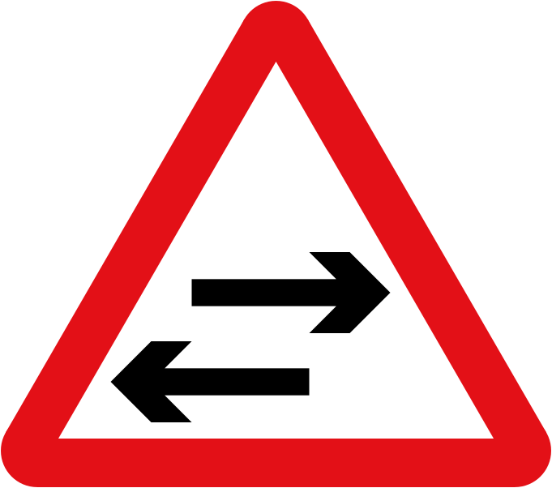

Loading...

Two-way traffic crosses a one-way road
⚠ Warning Signs
📖 Description
Warns that the road you are crossing or joining carries traffic in both directions. Drivers must look both ways and proceed only when the road is clear.